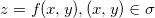
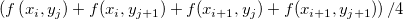
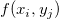

/math-6438eb9e9601106fe6b8c7910bd1c32c.png "\iint_{(\sigma)}f(x,y)dxdy")
内容 |
この機能は、Z=0平面と行列曲面の間の体積を2次元の積分により計算します。2次元の体積積分は、行列ウィンドウまたは、行列データのグラフ上で実行できます。
この機能を使用するには、
| 入力行列 |
操作する行列 |
|---|---|
| 欠損値を補間する |
このパラメータがtrueの場合欠損値を除去します。 |
この関数は数値積分を使って、行列の曲面以下の体積を計算します。
連続した曲面に対しては、曲面以下の体積は次式で計算されます。
数値法を使って、次のように記述することができます。
/math-d4377a5ab20df1e975450bd5bd62ec69.png "\iint_{(\sigma)}f(x,y)dxdy=\lim_{\Delta x \to 0}\lim_{\Delta y \to 0} \sum_{i=0}^{m-1} \sum_{j=0}^{n-1} f(x_{i,}y_j)\Delta x\Delta y\approx \sum_{i=0}^{m-1} \sum_{j=0}^{n-1} f(x_i,y_j)\Delta x\Delta y")
ここで、M, N は、それぞれ行列の行数、列数を表しています。実際の計算処理では、

がの代わりに使われます。